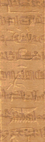

Writing

The ancient Egyptians believed that it was important to record and communicate information about religion and government. Thus, they invented written scripts that could be used to record this information.
The most famous of all ancient Egyptian scripts is hieroglyphic.
However, throughout three thousand years of ancient Egyptian civilisation, at least three other scripts were used for different purposes. Using these scripts, scribes were able to preserve the beliefs, history and ideas of ancient Egypt in temple and tomb walls and on papyrus scrolls.